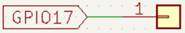
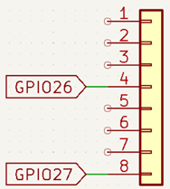

Objetivo. Detectar la presencia de un objeto cercano con un sensor IR digital. Activar una alarma visual encendiendo LEDs rojos cuando se detecta un obstáculo.
Procedimiento.
-
Conectar el sensor IR al GPIO17 del ESP32.

-
Conectar dos LEDs rojos a los pines GPIO26 y GPIO27 a través de resistencias limitadoras.

- Configurar el sensor como entrada digital con Pin.PULL_UP.
-
Programar la lógica para encender los LEDs durante 4 segundos cuando se detecte un objeto y luego apagarlos.
import machine from machine import Pin import time ir_evitar = machine.Pin(17, machine.Pin.IN, machine.Pin.PULL_UP) # GPIO17 led1=Pin(26, Pin.OUT) # Define la señal del pin led como de salida led2=Pin(27, Pin.OUT) # Define la señal del pin led como de salida while True: # Muestra valores lógicos para reconocer la presencia de un objeto print(ir_evitar.value()) # Si lo detecta enciende los LEDs rojos if ir_evitar.value() == 1: led1.value(1) led2.value(1) time.sleep(4) led1.value(0) led2.value(0) time.sleep(4)
Actividades sugeridas.
- Cambiar el tiempo de encendido y apagado de los LEDs.
- Usar LEDs de diferentes colores para identificar tipos de alerta.
- Mostrar un mensaje de alerta en una pantalla LCD1602 cuando se active la alarma.
- Integrar un zumbador para añadir una alerta sonora junto a la visual.
- Guardar el programa en el microcontrolador y ejecutarlo sin conexión al PC.